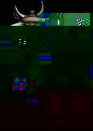

Building information IS available!
Building information IS available!
|
WileyMUD III! |
 |
"Get out of MY town you bastard!" The sorry excuse that is Shylar's only cityguard runs up and starts beating on the villager... blissfully unaware that the fool elf started the fight in the first place. You know that after 12 days of playing time, you could walk out and slaughter ALMOST everything in the room... but it's more fun to watch the newbie get pummeled as Eli starts healing the villager.
WileyMUD is a venerable DikuMUD, whose origins lie nearly six years in the past. Once upon a time, a wizard named Cyric took his brand new DikuMUD code and began building a world to run in it. He wisely eschewed ALL the boring areas that came with the game, believing that only pathetic players would enjoy playing a game that looked just like everyone else's game. He gathered such powerful names as Muthaarin'akya, Harlequin, Grimwell, Derkhil, Elcid, Daisy, and even Dark Muidnar. With their help, he managed to terrorize the students of WMU for nearly three years with the evil concoction known as WileyMUD II.
After a time, Cyric grew bored with his creation. He had acquired new and more devious things known as "work", and "jobs". As the ancient sun 3/60 gasped its last breath, so too did WileyMUD fade away. For a time, hopes held that WileyMUD III would be done, but the wretched "job" saw to it that this never came to be.
Then Dread Quixadhal, Dark Lord of VI and player of WileyMUD II, discovered a way of summoning the shades of the dead. With a mighty blast of power, he travelled back in time and wrested a copy of the Source from Cyric's treasure horde! A battle ensued, and some of the World was damaged in the scuffle. However, he dragged Source, World, and Vile Muidnar back into the present, and thus began the writing of WileyMUD III. The addition of Sedna and Dirk has helped to balance out our team, and occasional visits by Highlander and Zar go mostly unnoticed.
We have a relatively quiet mud here. We have only recently started to advertise our presence again, because only now have I decided that the game is stable and finished enough to show to any but the most dedicated. We were once known as one of the hardest, yet well balanced, DikuMUD's on the planet. After trying several other muds recently, I have to say this is still true. So, if you would like to see an ALL original world that is NOT a cakewalk... Please stop on by!
Building information IS available!
 and
and